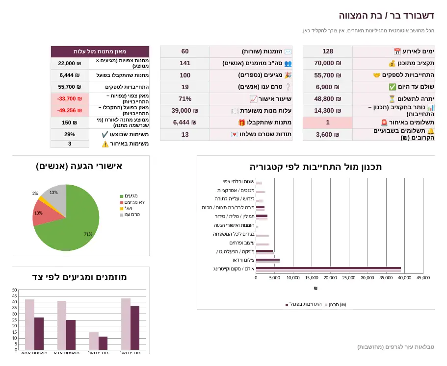
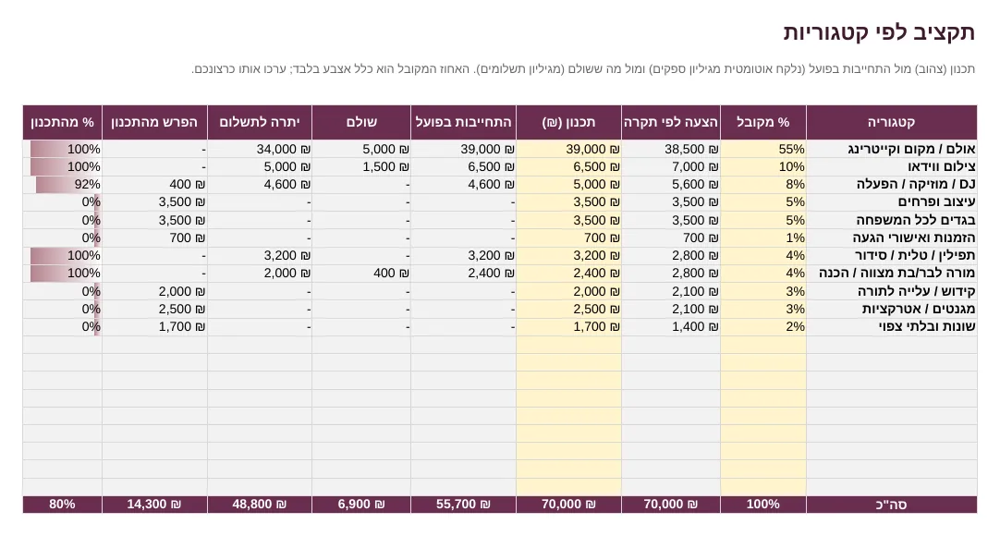
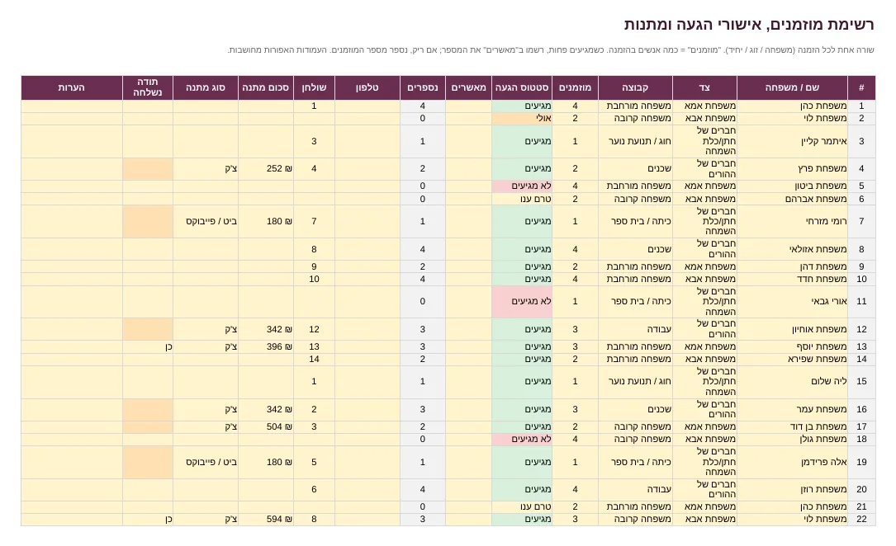
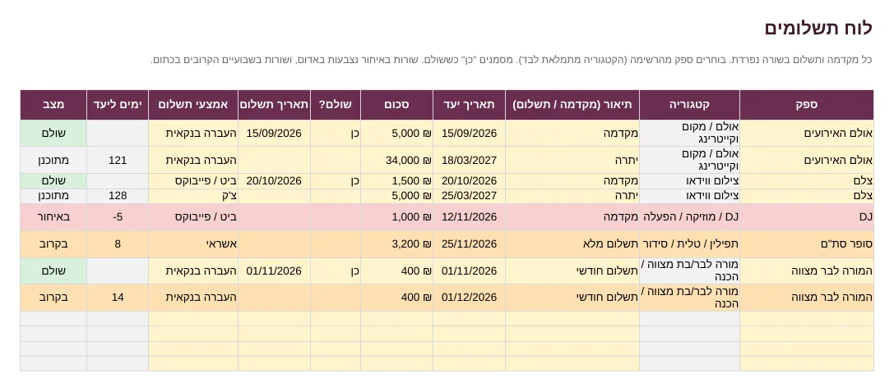
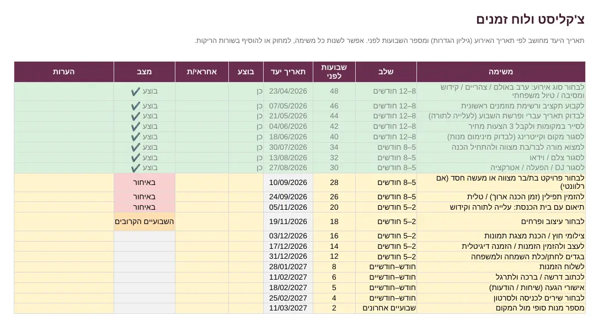
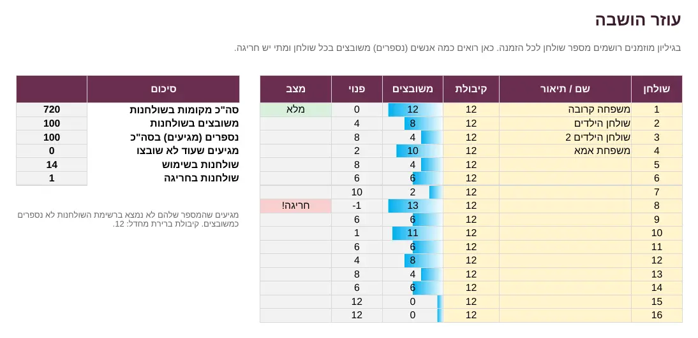

מתכנן בר / בת מצווה: שמחה מסודרת, בלי לחץ
תקציב, מוזמנים, מתנות, ספקים וצ'קליסט עם עלייה לתורה – קובץ אקסל / Google Sheets אחד בעברית.
- בר מצווה וגם בת מצווה
- עובד גם ב-Google Sheets
- בלי מאקרו
- קובץ דוגמה ממולא
תקציב, ספקים ותשלומים, מוזמנים ואישורי הגעה (כולל החברים של חתן/כלת השמחה), מתנות ותודות, צ'קליסט עם עלייה לתורה ותפילין, והושבה. דשבורד אחד מראה איפה אתם עומדים.
אקסל + Google Sheets · ₪39 · הורדה מיידית · צילומי מסך ↓ · מה בפנים ↓
ככה זה נראה
צילומי מסך מקובץ הדוגמה הממולא שמגיע עם המוצר (שמות ונתונים בדויים).






מה מקבלים
אותו מנוע מוכח של מתכנן החתונה שלנו, מותאם לבר ובת מצווה.
דשבורד חי
ימים לאירוע, תקציב מול התחייבויות, תשלומים קרובים ובאיחור, אישורי הגעה ומאזן מתנות.
תקציב לפי 11 קטגוריות
אולם וקייטרינג, צילום, DJ, תפילין וטלית, מורה לבר מצווה, קידוש ועוד – עם חלוקה מקובלת לפי התקרה.
מוזמנים ואישורי הגעה
משפחת אמא, משפחת אבא, חברים של הילד/ה וחברים של ההורים, עם סטטוס הגעה ומספר מאשרים.
מתנות ותודות
סכום וסוג (צ'ק, ביט, מזומן, מתנה), ומעקב תודות – גם כשהילד/ה כותבים אותן בעצמם.
ספקים ותשלומים
הצעות מחיר ומקדמות עם תאריכי יעד, כולל תשלומים חודשיים למורה.
צ'קליסט של 28 משימות
מבחירת סוג האירוע, דרך תפילין ובית הכנסת, ועד ההודעות תודה – עם תאריכים אוטומטיים.
עוזר הושבה
כולל שולחנות ילדים, תפוסה וחריגות.
נוסחים מוכנים (Word)
הזמנה ובקשת אישור הגעה, הזמנה לעלייה לתורה וקידוש, הודעות תודה, לוח זמנים לאירוע וצ'קליסט להדפסה.
איך זה עובד
קונים ומורידים
תשלום ב-PayPal, ומיד אחריו עמוד הורדה עם כל הקבצים.
ממלאים הגדרות
תאריך, מחיר מנה ותקציב – 5 דקות, והכל מתחבר.
מעדכנים תוך כדי
ספקים, תשלומים, אישורי הגעה ומתנות. הדשבורד מתעדכן לבד.
למי זה מתאים?
להורים שמתכננים בר או בת מצווה – אירוע ערב באולם, צהריים, קידוש ומסיבה או חגיגה משפחתית. הקובץ גמיש: מחיר מנה אפשר להשאיר ריק, ואת הקטגוריות אפשר לשנות.
שאלות נפוצות
זה מתאים גם לבת מצווה?
כן. הקובץ כתוב לשניהם. קטגוריה כמו "תפילין / טלית" אפשר למחוק או לשנות בגיליון הגדרות.
ומה אם עושים רק קידוש ומסיבה קטנה?
מצוין. משאירים את מחיר המנה ריק או מזינים עלות לאורח, ומשתמשים רק במה שצריך. הצ'קליסט כולל גם את התיאום עם בית הכנסת.
מה ההבדל ממתכנן החתונה?
אותו מנוע, אבל קטגוריות, צדדים, קבוצות מוזמנים, צ'קליסט ונוסחים שמותאמים לבר/בת מצווה. שניהם יחד בחבילת האירועים ב-₪69.
זה עובד ב-Google Sheets?
כן. הקובץ נבנה בלי מאקרו ובלי פונקציות שקיימות רק באקסל, כדי שיעבוד גם ב-Google Sheets: מעלים ל-Google Drive ופותחים עם Google Sheets. ייתכנו הבדלים קטנים בעיצוב ובגרפים. כך אפשר לעבוד עליו יחד מכמה טלפונים.
יש פקודות מאקרו? צריך להתקין משהו?
לא. רק נוסחאות רגילות של Excel, בלי מאקרו ובלי תוספים. עובד ב-Excel 2016 ומעלה, Excel 365, Excel לטלפון, Google Sheets ו-LibreOffice.
אפשר לקבל החזר?
מדובר במוצר דיגיטלי שמועבר מיד להורדה. פרטים מלאים במדיניות הביטולים. אם משהו בקובץ לא עובד – נתקן.
זה כולל ייעוץ או המלצה פיננסית?
לא. אחוזי החלוקה וסכומי הדוגמה הם כללי אצבע להתמצאות. המחירים בפועל תלויים בספקים, באזור ובעונה.
חבילת אירועים: חתונה + בר/בת מצווה
שני המתכננים המלאים ב-₪69 במקום ₪88. מתאים למשפחות עם כמה שמחות בדרך.